Janus / Guides
27 guides · 5 tracks
Step by step, on real data.
Every guide follows one dataset from opening it to a result, with the program's own screenshots.
Track 01
Get the data
Find imagery, build a series from it and save it in the formats other tools read.
- Surface reflectance, relief, dates
Data preparation: topographic correction and co-registration
Take the relief's illumination out of surface reflectance with the C-correction or SCS+C: the Copernicus DEM for the series' extent, the sun of each date from its files, and a check of the correlation with the illumination before and after; and move every date of a series onto a reference, whole or by a grid of tie points (AROSICS), with the shifts, the arrows on the map and the corrected series.
23 min read · 0 figures- Topographic correction
- Co-registration of dates
- Cloud detection
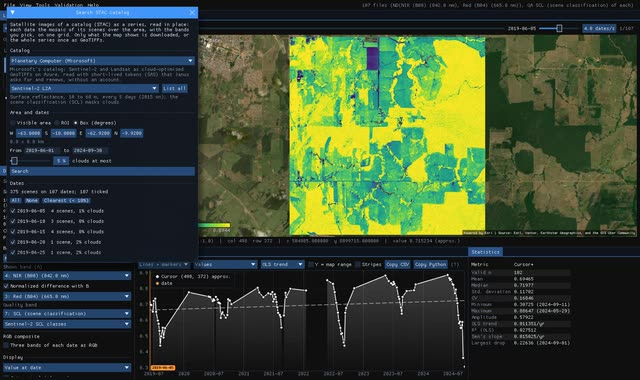
STAC catalogs
An area, two dates, a cloud cover: 375 Sentinel-2 scenes of five dry seasons as a series of 107 dates, read in place from Planetary Computer with the clouds masked; then a year of Sentinel-1 radar over the same square, in dB, a clearing seen through the clouds.
17 min read · 6 figures- The catalogs
- Searching
- Bands and cells
- Open as a layer
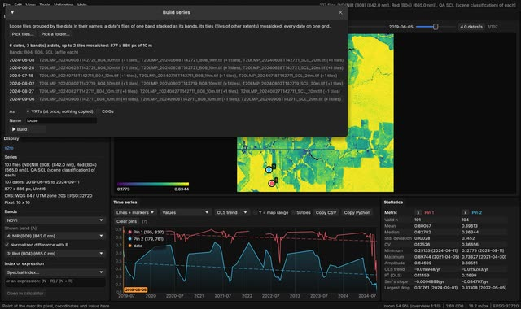
Series in and out
36 loose files built into a series, 107 irregular Sentinel-2 dates put every 16 days with their gaps filled, saved as a NetCDF and a Zarr that xarray reads, and a year of Sentinel-1 through a speckle filter.
17 min read · 7 figures- Build a series from loose files
- Regularize: one date every 16 days
- Save as COG, NetCDF or Zarr
- Open it in xarray
Track 02
Explore a series
Look at a series before running anything on it: indices, spectra, cycles, embeddings and the workspace itself.
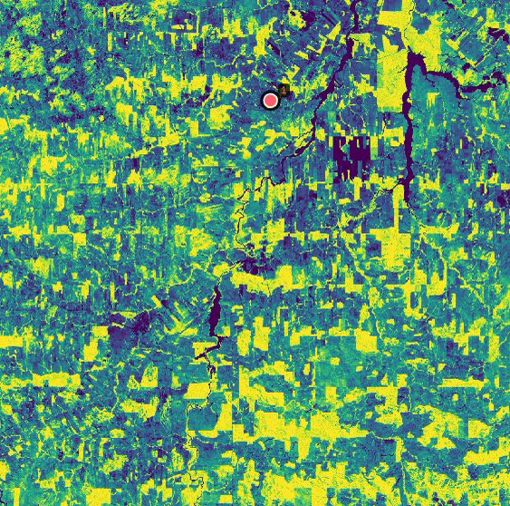
Spectral unmixing
How much forest, soil and water is in each pixel: every date of a Landsat series and every pixel of an EnMAP scene, from endmembers picked with pins.
10 min read · 11 figures- Endmembers from pins
- On the chart
- Running it on the series
- The constraints

EOF and lagged correlation
Where the vegetation follows the rain and after how many months, and the few patterns that explain a series of maps: CHIRPS rainfall against NDVI, the lags, the modes and North's test.
25 min read · 15 figures- The question
- The rain
- Lagged correlation
- Reading the maps
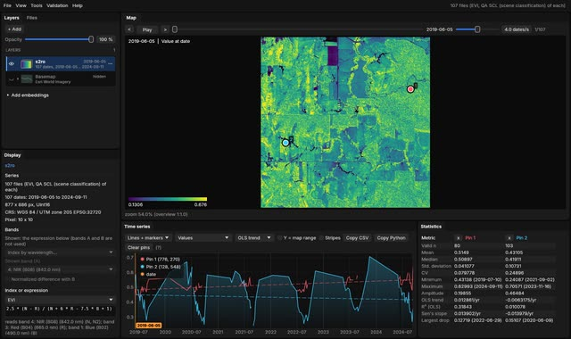
Raster calculator
EVI and the 275 Awesome Spectral Indices on a Sentinel-2 series, the open layers combined by short names, 107 dates reduced to an image, classes by rules.
17 min read · 5 figures- An index on the series
- The calculator
- The language
- Over time
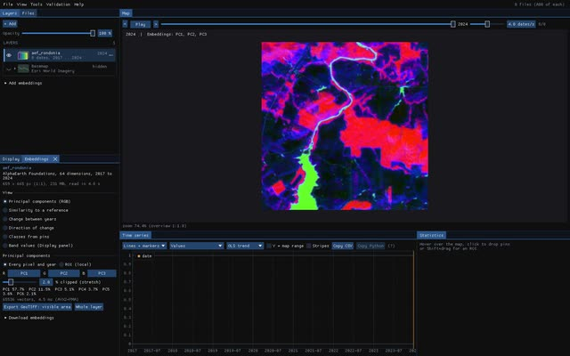
Embeddings
Forest, pasture and water from nine pins in milliseconds, what changed into what since 2017, and the direction of every change.
10 min read · 6 figures- The views
- Classes from pins
- What changed into what
- Direction of change
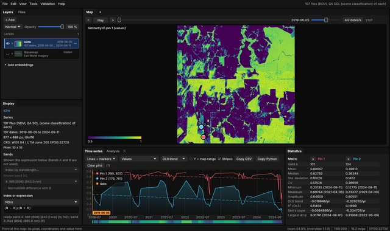
Seeing a series
Every pixel compared with a forest and with a pasture, the forest's yearly cycle by wavelet, its six bands over time and 41 years of Landsat as three behaviours in a UMAP plane.
9 min read · 5 figures- The similarity map
- Cycles
- Bands
- Atlas
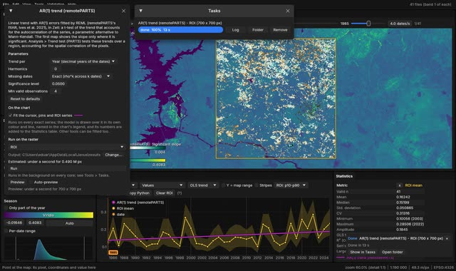
The workspace
The status bar and notices, Ctrl+K for any command, Ctrl+G for any coordinate, blend modes, groups and styles, a lens on another date, the provenance and Python of every result, previews, projects and undo.
23 min read · 9 figures- The status bar
- Tasks and notices
- The command palette
- Blend modes, groups, styles

Track 03
Find change and trends
Run a method on a pixel, then on the whole image, and read its maps.
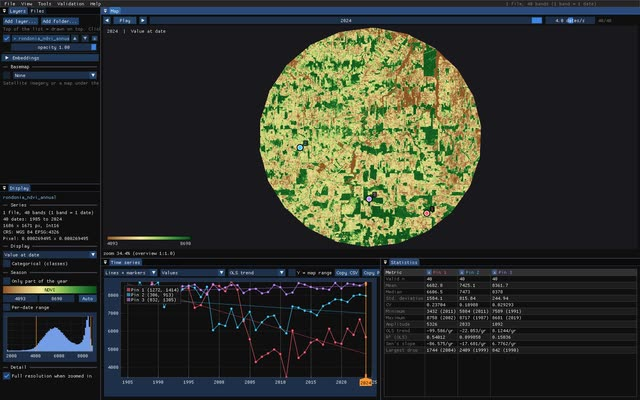
LandTrendr
Forty years of a Rondônia forest frontier as straight segments: the year, magnitude and duration of every clearing, and how long the forest took to recover.
13 min read · 15 figures- On the chart
- The parameters
- Running it on the image
- The maps
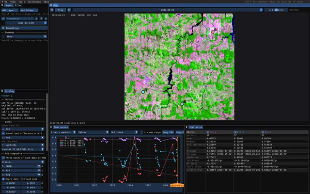
CCDC
Harmonic models of every band, breaks when the land changes, and a cloud-free image of any date.
8 min read · 7 figures- Clouds and the quality band
- The tool's window
- On the chart
- Running it
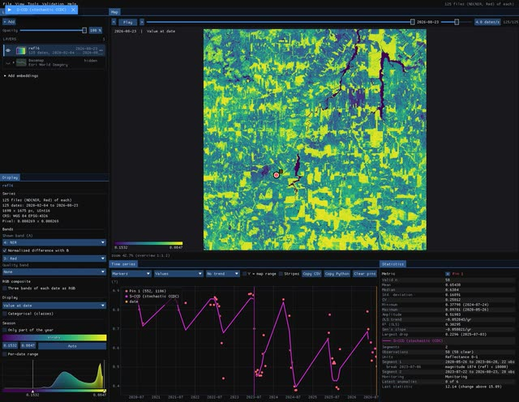
S-CCD
CCDC's models carried forward by a Kalman filter: a forest cleared in 2023, and one being cleared now, shown as a change in progress before it is confirmed.
12 min read · 12 figures- A confirmed change
- A change in progress
- The parameters
- Running it on the image
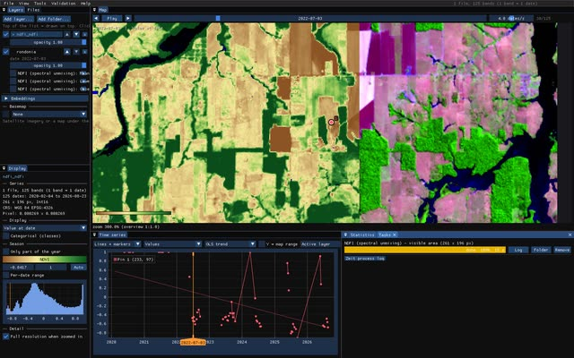
CODED and the NDFI
Forest degradation apart from deforestation, from the NDFI of every observation.
6 min read · 10 figures- The NDFI
- CODED on the chart
- The parameters
- The maps
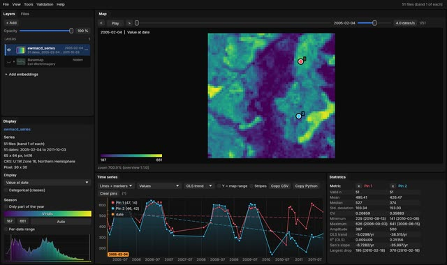
EWMACD
Thinning and harvests in pine stands found by EWMA control charts on every date, cloudy ones included: when, how strong, and when they recovered.
10 min read · 10 figures- On the chart
- The parameters
- Running it on the image
- The maps
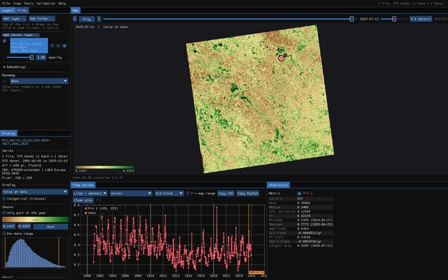
BFAST
Breaks in trend and season of a 16-day EVI series: BFAST, BFAST Lite and BFAST Monitor.
6 min read · 9 figures- BFAST
- BFAST Lite
- BFAST Monitor
- Running it on the image
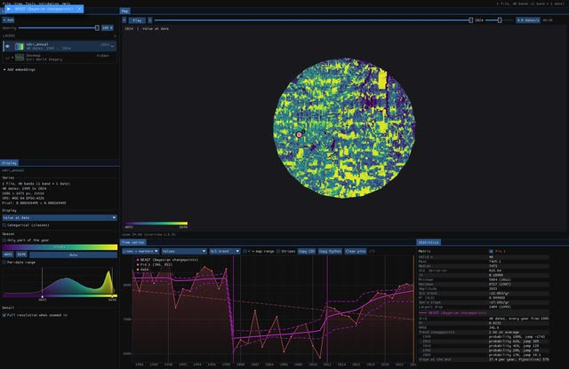
BEAST
Changepoints with their probability: a clearing BEAST is sure of, a rise it gives 61%, a forest where it claims no change, and maps of how sure it is.
13 min read · 14 figures- A clearing, and a maybe
- No change
- A series with seasons
- The parameters
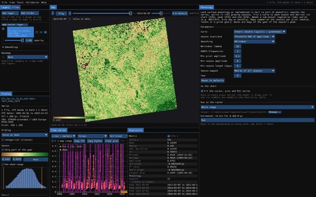
Phenology
The start, peak, end and length of the growing season of every pixel.
5 min read · 7 figures- On the chart
- The parameters
- Running it
- The maps
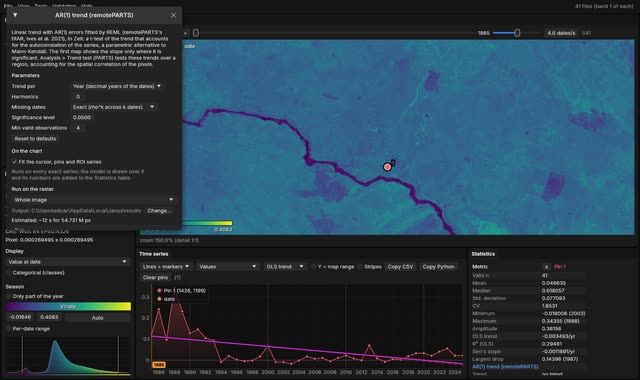
Trend test (PARTS)
Whether a region, or each land-cover class, is really trending, when a quarter of its pixels say so.
18 min read · 13 figures- One pixel: the AR(1) trend
- The map of trends
- The Trend test
- How it works
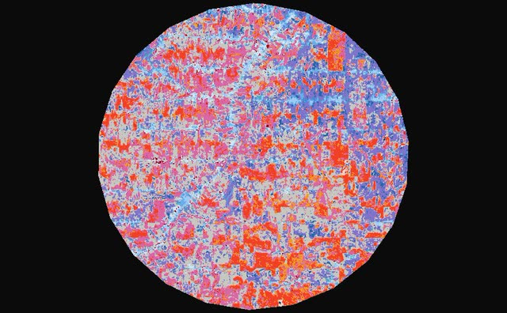
Emerging hot spots
Where forest and cleared land cluster in forty years of Rondônia, and how that changed: new, intensifying, oscillating or historical hot and cold spots.
10 min read · 9 figures- The parameters
- Running it
- The patterns
- Reading a pixel
- Multiband images, radar series
Noise and change: MNF, CVA, iMAD, radiometric normalization and the radar omnibus test
The minimum noise fraction transform to denoise and reduce a multiband image, change vector analysis and iMAD to map the change between two dates, the radiometric normalization by invariant pixels that puts one date on the scale of another, and the omnibus test that dates the changes of a Sentinel-1 series.
26 min read · 0 figures- The five tools
- Minimum Noise Fraction
- Change vector analysis
- iMAD
Track 04
Classify and segment
Turn a series into classes, fields and segments.
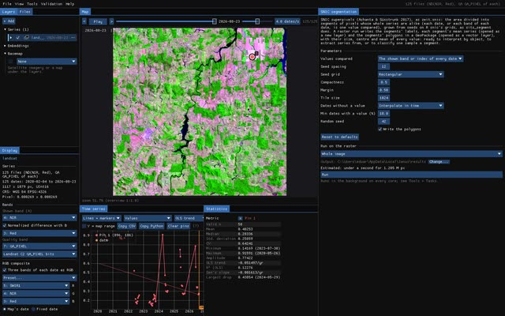
SNIC segmentation
Segments of pixels with the same history, their mean series as a layer and their polygons.
5 min read · 6 figures- The parameters
- Running it
- The segments
- Their mean series
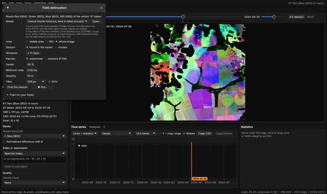
Field delineation
A year of Sorriso as 430 field parcels in three seconds, Trazo's published accuracy matched, and the network fine-tuned on fields you draw.
8 min read · 4 figures- The parameters
- Running it
- The class map
- The parcels
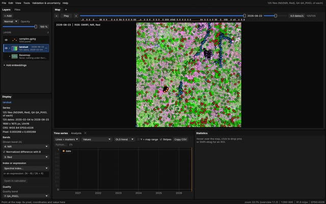
Deep learning
TempCNN, L-TAE and U-TAE trained on MapBiomas samples: a land cover map with its probability and uncertainty, smoothed, and where the model can be trusted.
14 min read · 11 figures- The networks
- The window
- Training
- The class map
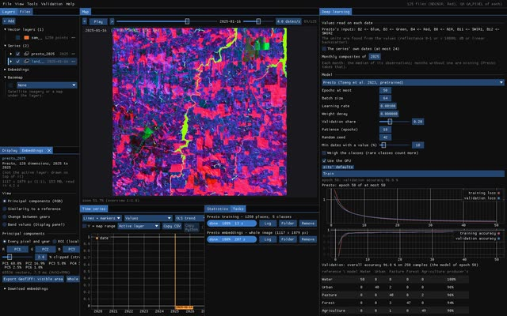
Presto
A pretrained foundation model's encodings of every pixel: embeddings to explore, and a classifier on them.
5 min read · 5 figures- Presto's inputs
- The classifier
- The embeddings
- The class map
Track 05
Validate and report
Check a map against a sample, and turn maps into hectares.

Validation
Strata, a sample, blind interpretation, accuracy and error-adjusted areas with confidence intervals.
33 min read · 25 figures- The Validation menu
- Maps to stratify
- The strata
- Sample size
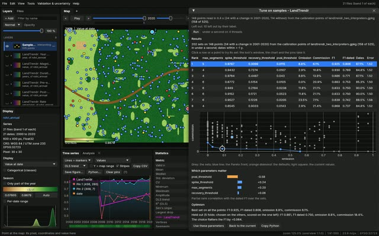
Tune on samples
LandTrendr's parameters searched on the calibration points of an interpreted project, the sets scored and ranked, and the map checked on the points that never tuned it.
20 min read · 12 figures- The problem
- Opening the window
- The calibration split
- The search
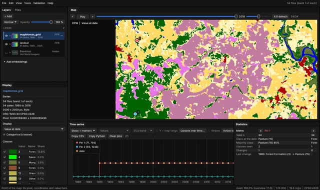
Maps to numbers
34 years of MapBiomas on a Landsat series' grid: the hectares of each class every year, the forest patches of 1985 as polygons, and what became of each one, year by year.
23 min read · 12 figures- Onto one grid
- Areas by class and date
- Polygons
- Back to the grid